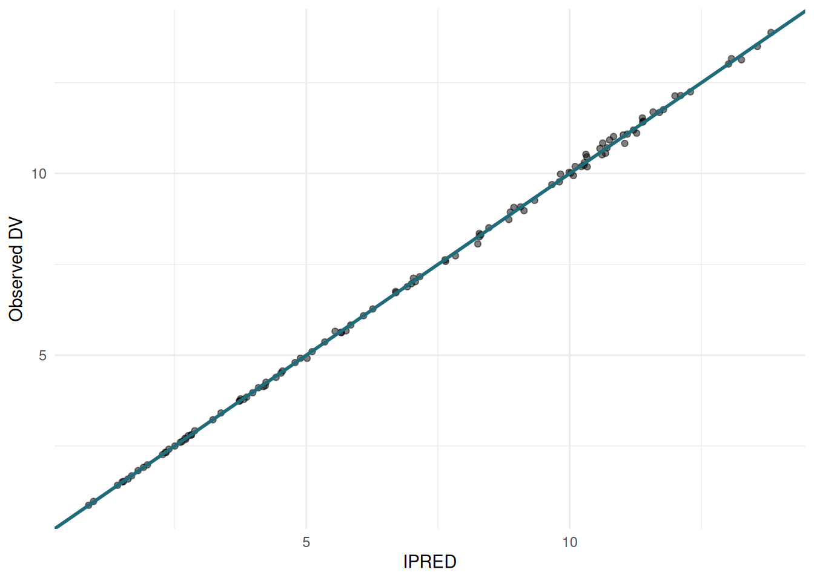
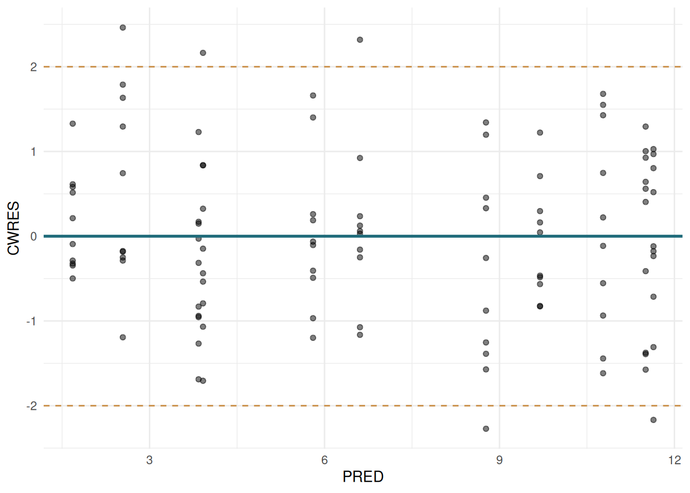
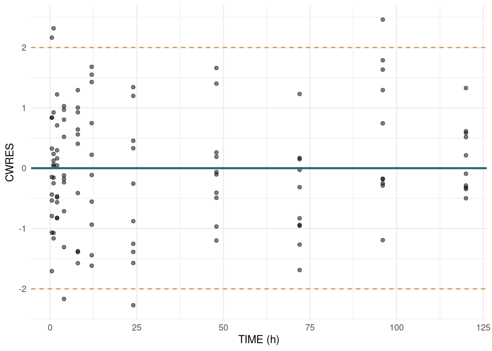
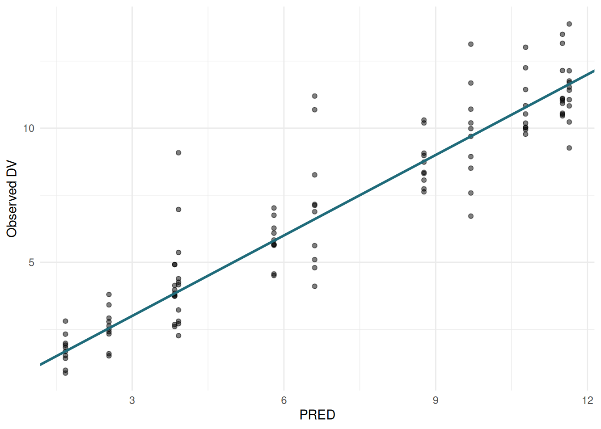
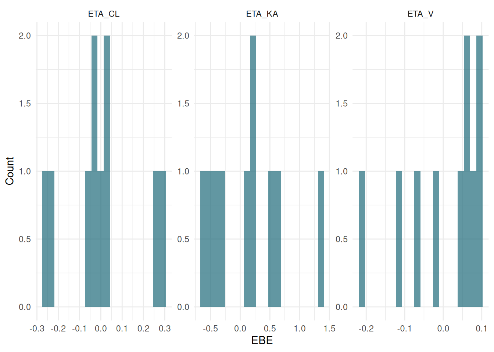

library(ferx)
library(ggplot2)
library(dplyr)
ex <- ferx_example("warfarin")6 Diagnostics
6.1 Overview
After fitting, the $sdtab data frame contains everything needed for standard goodness-of-fit diagnostics.
fit <- ferx_fit(ex$model, ex$data, method = "focei", covariance = TRUE)Warning: Model file [fit_options] sets `method = foce` but ferx_fit() argument
overrides it with `focei`. The call-time value will be used.Mu-referencing detected for: ETA_CL, ETA_KA, ETA_Vsdtab <- fit$sdtab6.2 The sdtab columns
names(sdtab)[1] "ID" "TIME" "DV" "PRED" "IPRED" "CWRES" "IWRES"
[8] "EBE_OFV" "N_OBS" #> [1] "ID" "TIME" "DV" "PRED" "IPRED" "CWRES" "IWRES" "EBE_OFV" "N_OBS"
names(fit$ebe_etas)[1] "ID" "ETA_CL" "ETA_V" "ETA_KA"#> [1] "ID" "ETA_CL" "ETA_V" "ETA_KA"sdtab contains per-observation diagnostics. Per-subject ETAs are in fit$ebe_etas (one row per subject).
| Column | Location | Description |
|---|---|---|
PRED |
sdtab |
Population prediction (eta = 0) |
IPRED |
sdtab |
Individual prediction (fitted ETAs) |
CWRES |
sdtab |
Conditional weighted residual |
IWRES |
sdtab |
Individual weighted residual |
ETA_* |
fit$ebe_etas |
Empirical Bayes estimate (EBE) for each BSV parameter |
6.3 Core GOF plots
6.3.1 IPRED vs DV
ggplot(sdtab, aes(x = IPRED, y = DV)) +
geom_point(alpha = 0.5) +
geom_abline(slope = 1, intercept = 0, colour = "#1F6B7A", linewidth = 1) +
labs(x = "IPRED", y = "Observed DV") +
theme_minimal()
6.3.2 CWRES vs PRED
ggplot(sdtab, aes(x = PRED, y = CWRES)) +
geom_point(alpha = 0.5) +
geom_hline(yintercept = 0, colour = "#1F6B7A", linewidth = 1) +
geom_hline(yintercept = c(-2, 2), linetype = "dashed", colour = "#C8893E") +
labs(x = "PRED", y = "CWRES") +
theme_minimal()
6.3.3 CWRES vs TIME
ggplot(sdtab, aes(x = TIME, y = CWRES)) +
geom_point(alpha = 0.5) +
geom_hline(yintercept = 0, colour = "#1F6B7A", linewidth = 1) +
geom_hline(yintercept = c(-2, 2), linetype = "dashed", colour = "#C8893E") +
labs(x = "TIME (h)", y = "CWRES") +
theme_minimal()
6.3.4 PRED vs DV
ggplot(sdtab, aes(x = PRED, y = DV)) +
geom_point(alpha = 0.5) +
geom_abline(slope = 1, intercept = 0, colour = "#1F6B7A", linewidth = 1) +
labs(x = "PRED", y = "Observed DV") +
theme_minimal()
6.4 ETA shrinkage
Shrinkage measures how much the individual ETAs are pulled toward zero relative to the omega variance. High shrinkage (> 30%) means the data are not informative enough to reliably estimate individual deviations, and ETA-based diagnostics become unreliable.
summary(fit)$shrinkage_eta[1] -0.05376796 -0.05223391 -0.05351655#> ETA_CL ETA_V ETA_KA
#> 0.142 0.283 0.452ETA shrinkage > 0.3 is a warning sign. It does not mean the model is wrong, but ETA-based covariate plots and individual parameter histograms should be interpreted cautiously.
6.5 ETA distribution
ETAs should be approximately normally distributed around zero. Per-subject EBEs are stored in fit$ebe_etas (one row per subject).
etas_long <- fit$ebe_etas |>
tidyr::pivot_longer(-ID, names_to = "eta", values_to = "value")
ggplot(etas_long, aes(x = value)) +
geom_histogram(bins = 20, fill = "#1F6B7A", alpha = 0.7) +
facet_wrap(~eta, scales = "free") +
labs(x = "EBE", y = "Count") +
theme_minimal()
6.6 ETA-covariate correlations
ferx_eta_cov() computes Pearson correlations between ETAs and subject-level covariates.
obs <- read.csv(ex$data)
ferx_eta_cov(fit, obs)No numeric covariate columns found in data.#> eta covariate r p_val flag
#> ETA_CL WT 0.42 0.016 *
#> ETA_V WT 0.38 0.031 *
#> ...Significant correlations (p < 0.05) flag covariates worth testing in the structural model.
6.7 Parameter correlation matrix
After a covariance step, inspect correlations between estimated parameters. Off-diagonal values near ±1 indicate structural identifiability problems.
if (!is.null(fit$cov_matrix)) {
ferx_cor_matrix(fit)
} else {
message("Covariance matrix not available (covariance step may have failed).")
}Covariance matrix not available (covariance step may have failed).6.8 Parameter estimates table
ferx_estimates() returns a tidy data frame for programmatic use or table export:
ferx_estimates(fit) param transform estimate se rse_pct lower_95 upper_95
1 TVCL identity 0.132695640 NA NA NA NA
2 TVV identity 7.737706623 NA NA NA NA
3 TVKA identity 0.810795004 NA NA NA NA
4 OMEGA(ETA_CL) variance 0.028588829 NA NA NA NA
5 OMEGA(ETA_V) variance 0.009592089 NA NA NA NA
6 OMEGA(ETA_KA) variance 0.335864835 NA NA NA NA
7 PROP_ERR proportional 0.010565647 NA NA NA NA
estimate_natural lower_95_natural upper_95_natural
1 NA NA NA
2 NA NA NA
3 NA NA NA
4 NA NA NA
5 NA NA NA
6 NA NA NA
7 NA NA NA6.9 Epsilon shrinkage
Epsilon shrinkage measures compression in the residual distribution:
summary(fit)$shrinkage_eps[1] 0.1430252#> PROP_ERR
#> 0.094Low epsilon shrinkage (< 20%) is generally acceptable.